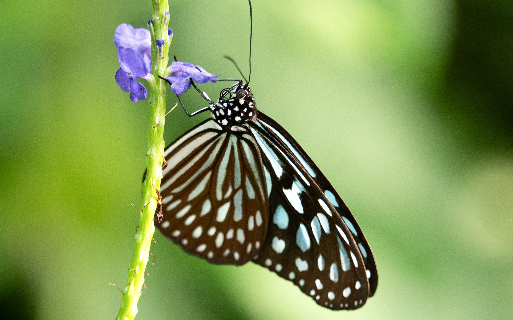

Getting Started
Techniques & Tips
Gear Guides
Inspiration & Challenges
Editing & Sharing
Featured Photographs Gallery
Subscribe to our Newsletter
Featured Photographs Gallery
Submitted by Antony Fritz.
Submitted by John Pedraza.

Submitted by Luna Alvarez.
Submitted by Alice Ellis.
Submitted by Aubrey Lopez.
Submitted by Mario Deanza.
Submitted by Parilov Groskii.
Submitted by Daniela Perez.